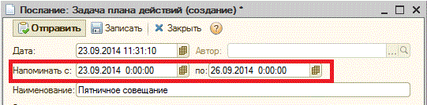
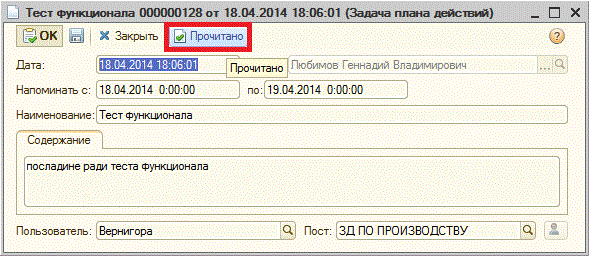

Создать послание - Послания используются для информационного обмена сообщениями между сотрудниками организации. Используйте послания для уведомления коллег.
Наименование. Краткое содержание послания.

Рис. 1 Установка периода в новом послании.
Для того, чтобы отметить послание как прочитанное, необходимо нажать на кнопку «Прочитано» (Рис. 2).

Рис. 2 Отметка о прочтении послания